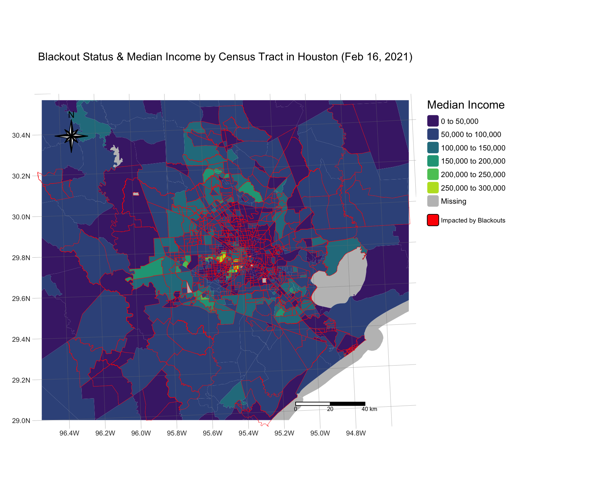

“In February 2021, the state of Texas suffered a major power crisis, which came about as a result of three severe winter storms sweeping across the United States on February 10–11, 13–17, and 15–20.”1 For more background, check out these engineering and political perspectives. These videos succinctly convey the severity and immediate consequences of the blackouts that occurred in Texas in the winter storms of early 2021, and convey that the lasting impacts will (and should) be studied for years to come. A quick note from the practical engineering video: providers spent more money on wholesale electricity in a week than would normally be spent in 4 years (on average), and that doesn’t include the crazy natural gas prices that were soaring during this time.
You can also read the University of Texas at Austin, Energy Institute’s report on the timeline and events of the February 2021 blackouts for a more thorough understanding of the event. The Energy Institute’s website states: “In February 2021, an extreme winter storm event caused a massive electricity generation failure in the state of Texas, which resulted in a loss of power for more than 4.5 million homes. This failure has resulted in at least 57 deaths across 25 Texas counties and over $195 billion in property damage, bringing attention to the energy system crisis and its potential causes,” 2
This blog post is a summary of my geospatial data and remote sensing project on the 2021 Texas Power Crisis, specifically looking at the blackouts in the Houston metropolitan area on February 16th, 2021 (during the second of three intense winter storms, also referred to as the week of the Winter Storm Uri).
In the primary analysis notebook, which you can find on my GitHub repository I use VIIRS night lights data, OpenStreetMap data, and US Census Bureau data to:
estimate the number of homes in Houston that lost power as a result of the first two storms
investigate if socioeconomic factors are predictors of communities recovery from a power outage
Data
The data used in this project are too large to export to GitHub, so I’ve provided links to access/download the data for reproducibility below. The night lights data has been preprocessed for academic use, and the file (92.2 MB) is unfortunately too large to upload on GitHub.
In particular, I will use the VNP46A1 to detect differences in night lights before and after the storm to identify areas that lost electric power.
I am using two primary nights’ data: February 7th and February 16th, as these provide the clearest view (least cloud cover) for the analysis. Many NASA Earth data products are distributed in 10x10 degree tiles in sinusoidal equal-area projection. Tiles are identified by their horizontal and vertical position in the grid. Houston lies on the border of tiles h08v05 and h08v06. For each night of data, two tiles per date (the 7th and 16th of February, 2021) were downloaded and prepared by Ruth Oliver for the Master of Environmental Data Science’s Geospatial Analysis course in the Fall quarter, 2023. Thus, there are a total of 4 separate .tif files that I read in for my analysis.
For improved computational efficiency and easier interoperability with sf, I use the stars package for raster handling. I read in the data using stars::read_stars().
Citation:
NASA Earth Data, Level-1 and Atmospheric Archive & Distribution System Distributed Active Archive Center (LAADS DAAC) [Data file] Available from: https://ladsweb.modaps.eosdis.nasa.gov/ Access date: October 26, 2023.
OpenStreetMap data
To determine the number of homes that lost power, I link (spatially join) blackout areas with OpenStreetMap data on roads and buildings.
Roads
Highways can account for a large portion of the night lights observable from space (see Google’s Earth at Night).
I use the roads data from OpenStreetMap to cut out the highways and associated lights (traffic, street lights) from my analysis to minimize falsely identifying these areas with reduced traffic as areas without power. Geofabrik’s download sites were used to retrieve a shapefile of all highways in Texas and prepared a Geopackage (.gpkg file) containing just the subset of roads that intersect the Houston metropolitan area. This data was also prepared by Ruth Oliver.
The roads Geopackage includes data on roads other than highways. I define a SQL query to select a subset of the highways from the Houston metropolitan area, and use that SQL query and subset selection to load just the highways data from the prepared Geopackage.
Houses
OpenStreetMap also has building data, which I use in my analysis to find the number of buildings impacted by the blackouts in the Houston Metropolitan area.
I define another SQL query when reading in the buildings data to select only residential buildings. I will use this data to find the number of homes impacted by blackouts.
Citation:
Geofabrik Download Server (2018), OpenStreetMap Data Extracts [Data file] Available from: https://download.geofabrik.de/ Access date: October 26, 2023.
US Census Bureau data
To investigate potential relationships between socioeconomic status and blackout status during the 2021 winter storm, I use data from the U.S. Census Bureau’s American Community Survey for census tracts in 2019. This data is within the folderACS_2019_5YR_TRACT_48.gdb and is an ArcGIS “file geodatabase”, a multi-file proprietary format that’s roughly analogous to a GeoPackage file. To explore the contents/layers of the geodatabase, you can access the ACS metadata
In my analysis, I combine the geometry with the attributes to get a feature layer that sf can use.
I use st_read() to load the GeoDataBase (GDB) layers, first selecting the geometries layer, then (separately) selecting the layer that income data is stored in. I also select the median income field from this dataset, as I am ultimately trying to investigate into the possible relationship between socioeconomic status and blackout status.
Before we begin, I’d like to note that because this analysis is about Texas, I reprojected the buildings, roads, and census data to EPSG:3083 (NAD83 / Texas Centric Albers Equal Area). The VIIRS night lights data is, at this point in the process, still in EPSG:4326. This is due to the CRS of my Houston metropolitan area bounding box coordinates being in the standard CRS EPSG:4326. After I crop my raster data to the area of interest using this bounding box, I will reproject both to EPSG:3083.
Preliminary Visualization
The night lights data is still in 4 separate pieces. Here, I aggregate the raster data by combining the tiles into a single stars object for each date (2021-02-07 and 2021-02-16) and then plot the resulting composites.
February 7th is the reference night (no blackouts) and February 16th is the night from which we’ll be obtaining our “blackout” data.
Code
# === Building mosaics (composites) of spatially disjoint stars objects === ## combining 1 & 2 for night 1 (Feb. 7th, no blackouts)night_feb_7 <-st_mosaic(night_lights1_star, night_lights2_star)# and 3 & 4 for night 2 (Feb. 16th, blackouts had occurred)night_feb_16 <-st_mosaic(night_lights3_star, night_lights4_star)# ==== viewing the outcomes of aggregating our data into the 2 nights ==== ## night 1 (control/no blackouts)plot(night_feb_7)
Code
# night 2 (blackouts)plot(night_feb_16)
There are a few things to note here:
The second night, February 16th, looks brighter overall. This is likely due to cloud cover and atmospheric activity from the storm acting as “noise”, which makes it difficult to have a perfectly clear image
That being said, this is the clearest night out of the storm date range, so we’re going to just have to work with what we’ve got, taking note of this “noise” in our analysis
There are methods to account for this, but that is outside of the scope of this project.
As mentioned earlier, the night lights data is currently in the CRS: EPSG:4326. We will eventually reproject it to EPSG:3083 (NAD83 / Texas Centric Albers Equal Area), but we need to perform a few steps first.
Blackout Mask
To find the areas in the Houston metropolitan area that experienced a blackout, I first find the difference in light intensity between the two nights of data, defining any areas that experienced a drop of more than 200 \(nW * cm^{-2} * sr^{-1}\) (light intensity unit) as experiencing a blackout. I then vectorize the mask and fix any invalid geometries.
Code
# finding the difference or change in light intensity between the two nightsdifference <- night_feb_7 - night_feb_16# ==== create mask ==== ## using "cut" to convert numeric (drop of more than 200 nW cm^-2^sr^-1 in the second night) to Factor (blackout, NA), using the cutoff range of 200 to infinityblackout_diff <-cut(x = difference,breaks =c(200, Inf), # everything with a difference of more than 200labels ="blackout") # label as experiencing a blackout# when using "cut", "Values which fall outside the range of breaks are coded as NA, as are NaN and NA values." so we've already reclassified the other values as NA. # this only gives us a list, not a dataframe, so I'll make a dataframe in the next step# vectorizing the blackout mask vectorized_mask <- blackout_diff %>%st_as_sf() %>%st_make_valid() # fixing any invalid geometries# check to see if properly converted it to sf data.frame:# cat("Class of vectorized mask:", class(vectorized_mask))
Now that the blackout mask is vectorized, I want to move on to crop this mask to our region or area of interest: the Houston metropolitan area. Before I can jump to cropping, I need to define the area of interest, turn those coordinates into a polygon, convert that polygon into a simple feature collection, and project it into the same CRS as the mask.
I’ll define the Houston metropolitan area with the following coordinates:
(-96.5, 29), (-96.5, 30.5), (-94.5, 30.5), (-94.5, 29)
These are written as (xmin, ymin), (xmin, ymax), (xmax, ymax), and (xmax, ymin) – I like to think of this as how a rectangle would be plotted on a graph, and then applying that same logic to a Cartesian plane. I’ll turn these coordinates into a polygon using st_polygon. In the same line, I will convert the polygon into a simple feature collection using st_sfc() and assign a CRS. Because we are using this polygon to crop the night lights data, it needs the same CRS (EPSG:4326). After this step, I’ll convert both the polygon and the cropped mask to EPSG:3083.
Code
# following the structure outlined in Chapter 4 in the GeoComputation with R textbook...# using cbind to create 2 lists of x and y coordinates, with each of the 4 coordinates for our polygon taken out individuallyhouston_coords =cbind( x =c(-96.5, -96.5, -94.5, -94.5, -96.5), # 1st, 2nd, 3rd, 4th, and back to 1sty =c(29, 30.5, 30.5, 29, 29)) # 1st, 2nd, 3rd, 4th, and back to 1st to close the polygon# turning the polygon into a polygon and converting that polygon into an sf collection, # following the structure outlined in Chapter 4 of the Geocomputation with R textbookhouston_polygon =st_sfc(st_polygon(list(houston_coords)), # using the same syntax as the textbookcrs ="EPSG:4326") # using the same CRS as the night lights dataset we checked earlier# check to see if the CRS match before moving on the rest of the question in the following chunk# print(paste("The CRS of the Houston polygon and our vectorized mask match:", st_crs(houston_polygon) == st_crs(vectorized_mask)))# assigning new subset name to this cropped view of our nightlights datanightlights_cropped <-st_crop(vectorized_mask, houston_polygon)# reprojecting the mask to EPSG:3083nightlights_transformed <-st_transform(nightlights_cropped, # data we're reprojectingcrs ="EPSG:3083") # specifying the CRS# reprojecting the polygon to EPSG:3083 to use it in cropping and plotting later onhouston_polygon_3083 <-st_transform(houston_polygon,crs =st_crs(buildings))# viewing our cropped, transformed data:# plot(nightlights_transformed)
Highways
Excluding highways from the blackout mask
Highways – particularly traffic on highways – account for a significant portion of night light (observable from space!). I don’t want to include light coming from traffic on highways in my analysis, so I’ll use the roads data I loaded in previously. When I read in the data, I defined a SQL query to select just the highways (class “motorway”).
This highways data will serve as the guide for where to “cut out” areas in the blackout mask that are within 200m of highways. To do this, I first made sure that the data is in the same CRS (essential for geospatial data manipulation), then identify areas within 200 meters of all highways using st_buffer. This step alone will produce undissolved buffers, so I’ll use st_union() in that same step to dissolve them.
Code
# check to see if the crs of our two datasets match (they do, as I reprojected the highways, buildings, and census geometries data to EPSG:3083 when we read in the data initially)# cat("The CRS match:", st_crs(highways) == st_crs(nightlights_transformed))# preliminary plot of highways to explore the data# plot(highways$geom, max.plot=1)# there are "6085 observations of 11 variables"...# creating a buffer zone 200m around highwayshighways_buffer <-st_buffer(highways,dist =200) %>%# specifying buffer distance, in metersst_union() # dissolving buffers# checking to see if this leaves us with just 1 layer# plot(highways_buffer)# it does!# viewing our nightlights data combined with the highways buffer# plot(nightlights_transformed, add = TRUE)
Now we can use this buffer around the highways to exclude those areas from our blackout mask.
The reason I said “cut out” earlier is because I don’t want to preserve the geometries of the polygons that intersect with the highways buffer that I will create. To do this, I will use st_difference(), which will not preserve the geometries. I picture a cookie cutter when I think of this method.
Code
# finding areas that do not intersect with the buffer zone#thought process: use st_intersect, get binary predicate of T/F values for if polygons share geometries with road buffer zone, select ones that do not...# we don't necessarily want to preserve the original geometries, so it's okay to cut the nightlights data using our highways buffer as the "cookie cutter" # using st_difference to find all of the polygons in x (nightlights) not including (via cutting) the highways buffer geometries. blackout_no_road <-st_difference(x = nightlights_transformed, y = highways_buffer)# plotting the areas that were "impacted" (farther than 200 m away from a road) by blackouts:# plot(blackout_no_road)
After this ‘cookie cutter’ step, I can find the number of areas that experienced blackouts that are farther than 200 meters from a highway. This is what we’ll consider “impacted”, i.e., experienced a blackout, in this analysis.
Code
# displaying the number of polygons included after cutting out our buffered roads maskcat("There were", nrow(blackout_no_road), "areas farther than 200m from a highway that experienced a blackout.\n")
There were 7247 areas farther than 200m from a highway that experienced a blackout.
Code
# intuition check: did our previous mask contain the same number of observations?#cat("\nDo our pre- and post-highway excluded masks contain the same number of observations?:", nrow(nightlights_transformed) == nrow(blackout_no_road), "\n")# showing the number of complete polygons that were eliminated during this cutout# diff_lengths <- nrow(nightlights_transformed) - nrow(blackout_no_road)# cat("\nThere were", diff_lengths, "areas within 200 meters of a road that experienced a blackout")
Homes
Finding homes impacted by blackouts
Using the buildings data that I read in and reprojected to CRS EPSG:3083 at the beginning of this process, we can find the number of homes that experienced blackouts on February 16th, 2021.
After making sure that the CRS of our datasets match, I crop the buildings data to the area of interest, the Houston metropolitan area, using the reprojected bounding box from earlier. This step can speed up processing time before the next step of joining the buildings data and the cropped blackout mask.
Code
# check: let's see if the crs match (they should)# cat("The CRS of our datasets match:", st_crs(highways) == st_crs(buildings))# returns TRUE# first limit buildings area to houston (crop)# cropping to Houston polygon:# note: this step can also take a few secondsbuildings_houston <-st_crop(buildings, houston_polygon_3083)
After cropping, I use st_intersects() to find which homes intersect with blackout areas, create a binary predicate of homes that do or do not intersect, and filter the buildings dataset to keep only the homes that do intersect (share geometries) with blackout areas. I can then count the number of impacted homes.
Code
# selecting buildings in houston that share geometries with blackout areasbuildings_intersect <-st_intersects(x = buildings_houston,y = blackout_no_road) # homes farther than 200m from a road# this returns the same number of rows#filtered_homes <- st_filter(x = buildings_houston, y = nightlights_transformed)# using "lengths" to find the polygons that do not intersect (binary = 0) buildings_in_blackout <-lengths(buildings_intersect) >0# selecting the polygons within our buildings data that share geometries with blackout areashomes_blackout <- buildings[buildings_in_blackout, ] # count number of impacted homes: count number of homes in "buildings" dataset that share geometries (st_intersects) with blackout areas, use binary predicate and count total number of rows for where a condition (in blackout zone/do intersect) is met (=True)...# displaying the number of homes within areas that were impacted by blackoutscat("There were", nrow(homes_blackout), "homes within areas that experienced a blackout")
There were 157410 homes within areas that experienced a blackout
Median Income
Investigating socioeconomic factors
Clean ACS data
There are currently two ACS/census datasets in the environment now: texas_census, which contains the geometries layer, and income, which contains the income layer. For my analysis, I’m interested in the median income of households. The median income field is labeled B19013e1 in the income dataset, so I’ll select and rename that column to something more intuitive. I’ll also select the census tract geometry information (GEOID) and rename that to make it compatible for joining with the texas_census dataset.
Code
# there are conflicting "select" methods in the raster and tidyverse (dplyr) packages, so I'm specifying the `dplyr` method# also selecting the GEOID column here to make it easier to join latermedian_income <- income %>% dplyr::select(B19013e1, GEOID) %>%# specifying dplyr package/libraryrename("median_income"="B19013e1", # renaming to something more intuitive"GEOID_Data"="GEOID") # renaming to match `texas_census` column name
This is an important step because I’m essentially trying to join by census block group to investigate the possible relationship between socioeconomic status (median income of each census tract) and blackout status (impacted vs. un-impacted by blackouts) as a marker for ability to recover from the 2021 winter storm.
Determining which census tracts experienced blackouts
Because the income and thus median_income datasets do not have geometries associated with them, I can’t spatially join them. Instead, I’ll use dplyr’s left_join() to join the income data to the census tract geometries by census tract geometry ID. I will then spatially join the census tract data with buildings determined to be impacted by blackouts. Using this joined dataset, I can find which census tracts experienced blackouts.
Code
# joining the data, can't use a spatial join because income dataframe has no geometries, joining by the column that the two dataframes share# now we can join by the GEOID_Data column...# joining income data to census tract geometriescensus_income <-left_join(texas_census, median_income, by ="GEOID_Data")# spatially joining census tract data (joined with median income column) with areas determined to be impacted by blackouts using st_joinblackout_census <-st_join(homes_blackout, census_income,left =TRUE) # performing a left join because we only want Houston area, and our homes_blackout data is already cut to Houston area# default op here is st_intersects# finding the number of unique census tracts in our joined dataframen_census_impacted <-length(unique(blackout_census$GEOID_Data))cat("There were", n_census_impacted, "census tracts impacted by blackouts in the Houston metropolitan area on February 16th, 2021.")
There were 754 census tracts impacted by blackouts in the Houston metropolitan area on February 16th, 2021.
Code
# because we performed a left join with our blackout buildings data as our x and census income data as our y, our blackout-impacted geometries are the only ones we're keeping, so we now have a full dataset of only blackout-impacted geometries
Mapping blackout status & median income
To investigate the relationship between median income and blackout status per census tract, I crop the census tract data to the area of interest, create centroids in the census tracts that were impacted by blackouts, and map these onto a base layer of Houston census tracts colored by median income.
Code
# cropping to Houston polygon for plottinghouston_census_income <-st_crop(census_income, houston_polygon_3083) # spatial selection of census tracts that experienced blackouts, using bracket selection and default st_intersects argumentcensus_homes_cropped <- census_income[homes_blackout, ] # making centroids to show which census tracts had blackoutscropped_centroids <-st_centroid(census_homes_cropped) # using our dataset we got from the bracket-selection method and st_intersects between census + income data and buildings in blackout areas
For clearer visualization, I have two maps: one with the blackout status indicated by centroids, and the other with blackout status indicated by a red outline around the impacted tracts.
# now, let's plot it for real! (customizing the map to look more polished & informative)# we need a base layer of all of our census tracts in Houstonmap_centroids <-tm_shape(houston_census_income) +tm_fill(fill ="median_income", # coloring the base layer polygons by median incomepalette ="-viridis", # using inverted viridis palette so lower income tracts are darker and stand out more (felt more intuitive to have these be darker, and higher median income tracts be more green/yellow)title ="Median Income") +# updating legend titletm_shape(cropped_centroids) +# adding in centroids datatm_dots(fill ="red", size =0.05) +tm_title("Blackout Status & Median Income by Census Tract in Houston (Feb 16, 2021)") +tm_scalebar(position =c("right", "bottom")) +# scale bar,tm_compass(type ="8star", # I thought this compass style looked coolposition =c("left", "top"), # positioning the compasssize =3) +# making compass smallertm_graticules(lwd =0.5, alpha =0.5) +# making my graticules thinner and less opaque so our data is more legibletm_add_legend(type ="dots", # labeling my centroids on the maplabels ="Impacted by Blackouts",fill ="red") +# more plot layout cusomization tm_layout(frame =FALSE,title.size =2,legend.frame =FALSE,legend.title.size =1,legend.width =9)# viewing the mapmap_centroids
Code
map_borders <-tm_shape(houston_census_income) +tm_fill(fill ="median_income", # coloring the base layer polygons by median incomepalette ="-viridis", # using inverted viridis palette so lower income tracts are darker and stand out more (felt more intuitive to have these be darker, and higher median income tracts be more green/yellow)title ="Median Income") +# updating legend titletm_shape(census_homes_cropped) +# adding in centroids datatm_borders(col ="red", lwd =0.4) +# any smaller and the lines are spottytm_title("Blackout Status & Median Income by Census Tract in Houston (Feb 16, 2021)") +tm_scalebar(position =c("right", "bottom")) +# scale bar,tm_compass(type ="8star", # I thought this compass style looked coolposition =c("left", "top"), # positioning the compasssize =3) +# making compass smallertm_graticules(lwd =0.5, # making my graticules thinner alpha =0.5# and less opaque so our data is more legible#, col = "white" ) +tm_add_legend(type ="borders", # labeling my centroids on the maplabels ="Impacted by Blackouts",fill ="red") +tm_layout(frame =FALSE,title.size =2,legend.frame =FALSE,legend.title.size =1,legend.width =9)map_borders

There doesn’t seem to be a clear trend in socioeconomic status and blackout status. Let’s plot the distribution to investigate further:
Distribution of median income by blackout status
To further visualize this relationship, I create subsets of impacted and unimpacted tracts and plot the distribution of median income below.
Code
# plot the distribution of income in impacted and un-impacted tracts# making two separate dataframes, filtering for & NOT for GEOID_Data (census tracts that are or are not impacted by blackouts) # filtering for census tracts IN HOUSTON that are impactedimpacted <- houston_census_income %>%# using our census + income dataset cropped to the Houston polygonfilter(GEOID_Data %in%unique(blackout_census$GEOID_Data)) # keeping rows that have matching values in the list of unique GEOID_Data values from our blackout + census dataset. # filtering for census tracts in Houston that are NOT impactedunimpacted <- houston_census_income %>%filter(!GEOID_Data %in%unique(blackout_census$GEOID_Data)) # selecting rows in the GEOID_Data column in our dataset that are NOT in the list of GEOID_Data values that are in our blackout-filtered dataset.# check: impacted census tracts should be the same number as the value we got before:# length(unique(blackout_census$GEOID_Data)) == nrow(impacted)# returns
Code
# mean_impacted_income <- # using ggplot() and geom_histogram() to plot the distribution of income in impacted and unimpacted census tractsimpacted_plot <-ggplot() +geom_histogram(data = impacted, # using our filtered dataframe from the previous chunkaes(x = median_income),fill ="black", # fill = black for impacted by blackouts feels intuitivebins =30) +# custom number of binsylim(0, 100) +# setting y limits to have a consistent scale across my plotslabs(title ="Impacted by blackouts", # updating titlex ="Median Income", # and axes labelsy ="Count") +theme_bw() # customizing themeunimpacted_plot <-ggplot() +geom_histogram(data = unimpacted, # using our filtered dataframe from the previous chunkaes(x = median_income),fill ="gold", # gold is more legible than yellow, indicates lack of blackoutbins =30) +ylim(0, 100) +# setting y limits to have a consistent scale across my plotslabs(title ="Un-impacted by blackouts", # updating titlex ="Median Income", # and axes labelsy ="Count") +theme_bw() # customizing theme# using patchwork to show the distributions side by sideimpacted_plot + unimpacted_plot
Results
Based on these histograms, it is hard to see a notable difference between the distribution of median income per blackout group – impacted vs. un-impacted. This would suggest that residents in Houston were impacted by blackouts during the storm (at least on February 16th, 2021) regardless of the median income per census tract. The videos linked at the top of this analysis along with other reports on the blackout events during the extreme winter storms of early 2021 in Texas suggest that the energy/power infrastructure and distribution practices left the state of Texas unequipped for the extreme demands or loads brought on by the storm. These energy issues, coupled with infrastructure failures related to extreme, cold temperatures in a climate that does not regularly face these temperatures, such as water pipes bursting, caused the impacts of the winter storm to be severe. The dense aggregation of data around the lower median income range in the impacted group may indicate that though homes may have experienced blackouts equally, they would not be impacted equally, as the ability to recover from severe weather events and other impacts of climate change is related to socioeconomic status 3, 4.
Conclusion & Limitations
There are many limitations to this study at different levels. The first notable limitation is the light scaling difference between our “control” night lights data and our “test” or storm-impacted night lights data. In the preliminary images rendered, we can see that the scale of light intensity ranges much higher on the “storm” night, February 16th, 2021. Continuing on with our analysis of this data without adjusting our scales to match between the control and test groups may have led to areas that experienced blackouts being obscured by the overall “noise” or opacity of the brighter lights in that night’s data.
Our ACS data is also a limitation of this study – it is from 2019, while the blackouts we’re analyzing were in 2021. In three years, a lot can change for individuals financially. Another limitation is that we are looking at residential buildings blackouts, not factoring in the number of “homes” or occupied apartments, for example, within an apartment building. There’s also the factor of how we buffered to remove areas within 200m of highways. This step could have potentially omitted areas with disproportionately lower income households.
We’re also not considering or quantifying the cost or burden of recovery from the event, which is where the socioeconomic level data becomes more meaningful. To claim that areas, later quantified as census tracts, which were further classified based on median income, were “impacted” or “un-impacted” based on the originally imperfect night lights data feels incomplete or dissatisfying to me. The weight of the term “impact” carries implications about the level of impact that individuals carry based on this blackout event, such as recovery factors. Lower-income individuals and households would likely be disproportionately impacted by the financial burdens of replacing damage caused by the storm or medical bills from any injuries or health issues related to the storm, for example 5, 6. The scope of this analysis is limited to the a day of clearer night light data (February 16th, 2021), which is temporally limiting as it might not be the height of the blackouts.
By not factoring in anything other than visible blackout status and median income of a census tract in these final visualizations (the map and histograms), it feels like we’ve barely scratched the surface of being able to grasp the severity and complexity of how the storms and subsequent blackouts truly impacted the residents of Houston, and the greater state of Texas. A possible next step in our exploration of data relating to the impacts of the blackouts in Houston could be to incorporate data about proximity to different types of energy sources or power distribution infrastructure, or bringing in some quantifiable cost of recovery. It has been almost three years since the event, and I hope to find more meaningful answers and visualize them in the future.
Sources
Fothergill, A., & Peek, L. A. (2004). Poverty and disasters in the United States: A review of recent sociological findings. Natural Hazards, 32, 89–110.
Geofabrik Download Server (2018). OpenStreetMap Data Extracts [Data file] Available from: https://download.geofabrik.de/ Access date: October 26, 2023.
NASA Earth Data, Level-1 and Atmospheric Archive & Distribution System Distributed Active Archive Center (LAADS DAAC) [Data file] Available from: https://ladsweb.modaps.eosdis.nasa.gov/ Access date: October 26, 2023.
Substance Abuse and Mental Health Services Administration. (2017).Greater Impact: How Disasters Affect People of Low Socioeconomic Status. Disaster Technical Assistance Center Supplemental Research Bulletin, 4-13. https://www.samhsa.gov/sites/default/files/dtac/srb-low-ses_2.pdf.
The University of Texas at Austin. (2023). The Timeline and Events of the February 2021 Texas Electric Grid Blackouts. The University of Texas at Austin Energy Institute. https://energy.utexas.edu/research/ercot-blackout-2021
The University of Texas at Austin. (2023). The Timeline and Events of the February 2021 Texas Electric Grid Blackouts. The University of Texas at Austin Energy Institute. Website. https://energy.utexas.edu/research/ercot-blackout-2021. Access date: December 17, 2023.↩︎
Fothergill, A., & Peek, L. A. (2004). Poverty and disasters in the United States: A review of recent sociological findings. Natural Hazards, 32, 89–110.↩︎
Substance Abuse and Mental Health Services Administration. (2017).Greater Impact: How Disasters Affect People of Low Socioeconomic Status. Disaster Technical Assistance Center Supplemental Research Bulletin, 4-13. https://www.samhsa.gov/sites/default/files/dtac/srb-low-ses_2.pdf.↩︎
Fothergill, A., & Peek, L. A. (2004). Poverty and disasters in the United States: A review of recent sociological findings. Natural Hazards, 32, 89–110.↩︎
Substance Abuse and Mental Health Services Administration. (2017).Greater Impact: How Disasters Affect People of Low Socioeconomic Status. Disaster Technical Assistance Center Supplemental Research Bulletin, 4-13. https://www.samhsa.gov/sites/default/files/dtac/srb-low-ses_2.pdf.↩︎
![]()